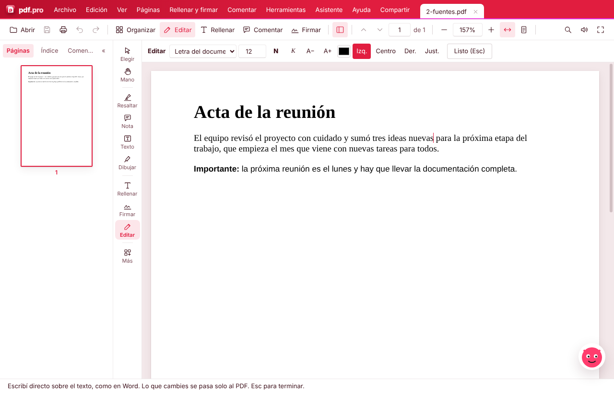
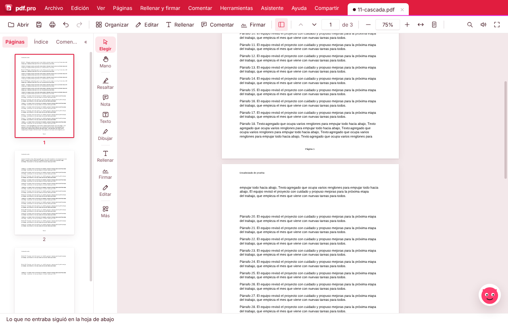
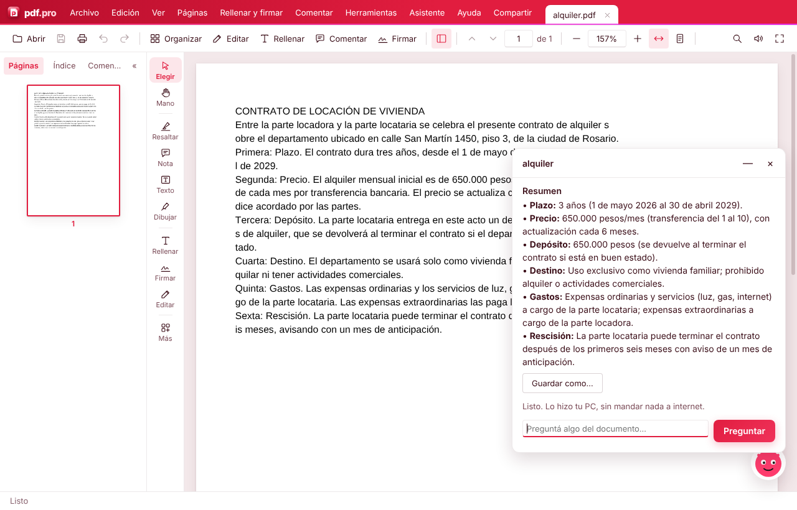
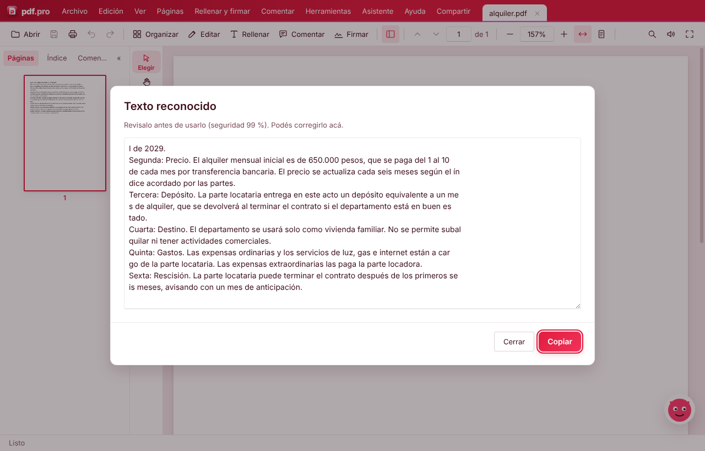

pdf.pro
pdf.pro
pdf.pro
pdf.pro
Gratis, en castellano, para Windows. Escribís sobre el PDF con su misma letra, y si no entra, sigue solo en la hoja de abajo.
⬇ Descargar para Windows
Los editores de siempre tratan cada renglón como una cajita suelta: si agregás texto, se pisa con lo de abajo o se sale de la hoja. pdf.pro edita la hoja como un documento de verdad.

Un modelo de IA corre en tu PC: resume el documento y contesta lo que le preguntes. Trabaja en segundo plano y te avisa cuando termina. El resumen se guarda como Word o PDF. Si preferís, también funciona con Claude o Gemini.

Marcás una parte de una hoja escaneada o una foto y pdf.pro la lee, con tildes y eñes, sin internet. Lo revisás y lo copiás.

Código abierto: lo podés revisar y mejorar en GitHub.
⬇ Descargar para Windows